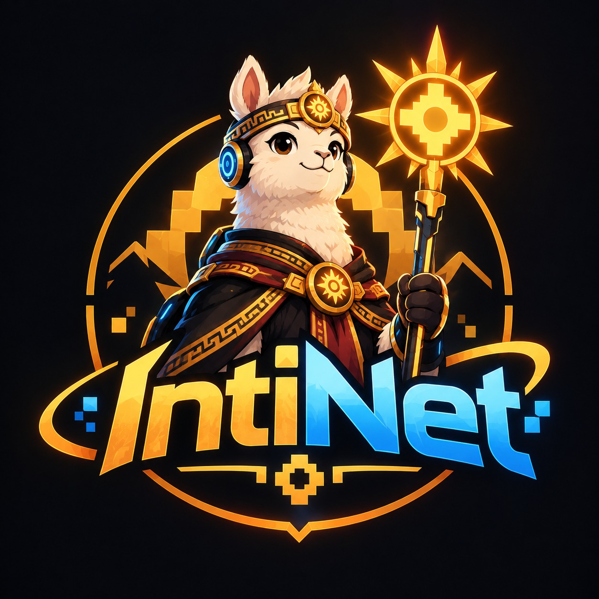
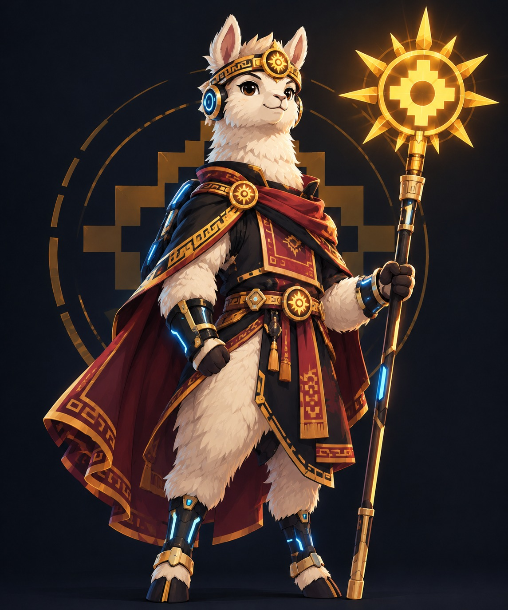

DALE PLAY01 ↗
VISTA ILUSTRATIVA
00:00Mi próxima aventura
Tu biblioteca tiene vida.
Vídeos, pistas de audio y subtítulos. Explora tu contenido desde una experiencia multimedia.

IntiNet®De tu PC a tu Android. De una carpeta a toda tu biblioteca. Dale a tus archivos un lugar para encontrarse.

Elige un archivo de ejemplo y mira cómo viaja entre dispositivos. Así se siente tener tu contenido conectado.
Tu Android está al otro lado.
Activa el servidor en tu equipo y conecta otro dispositivo a la misma red. Encuéntralo con el radar local o introduce su IP y puerto.
El equipo que comparte debe permanecer encendido y accesible.
Una biblioteca que puedes explorar, reproducir y retomar. Tus archivos dejan de ser solo una lista.
Vídeos, pistas de audio y subtítulos. Explora tu contenido desde una experiencia multimedia.
Fotos, documentos PDF y cómics CBZ. Un espacio para mirar más allá del vídeo.
Favoritos, historial y progreso por usuario para volver a lo que te interesa.
La energía del sol. La calidez de nuestra alpaca. Una mirada al futuro. IntiNet une su identidad andina con una idea sencilla: acercarte a tu mundo digital.
IntiNet ✳Una idea de AlpacaTech.
Una colaboración que nos conecta.
Lo que necesitas saber sobre esta beta.
El contenido se comparte desde el equipo que actúa como servidor. Configurar un dominio no sube tus archivos a la nube ni crea un servicio de almacenamiento por sí solo.
La conexión entre dispositivos de una misma red local no necesita salir a Internet. Algunas funciones o recursos externos pueden requerir conexión. El acceso desde fuera de casa sí requiere conectividad y configuración adicional.
El proyecto incluye una aplicación de escritorio preparada para Windows y una aplicación Android con navegación para TV. La interfaz también se sirve por web. La compatibilidad debe verificarse en cada dispositivo.
La interfaz utiliza un servidor remoto activo a la vez y permite cambiar de conexión. Esto no significa que el servidor esté limitado a recibir un único cliente.
IntiNet está en beta. El acceso remoto requiere configuración y la protección de las operaciones del servidor necesita reforzarse antes de exponerlo públicamente. Esta página es una presentación del producto, no un servicio de alojamiento.
Conoce la beta y forma parte de lo que viene.
Descargas de la beta en Google Drive. Elige tu plataforma y pulsa Descargar en Drive.